Pontos craniométricos são pontos anatômicos utilizados como referência para craniometria.
Classificam-se em pontos pares e ímpares.
Os ímpares situam-se no plano sagital.
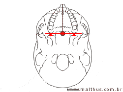
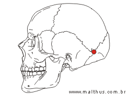
Na borda anterior do forame magno.
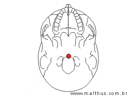
Ponto de encontro das sutura sagital e coronal.
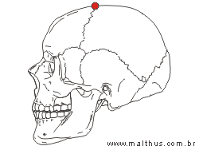
Parte mais alta no côndilo da mandíbula.
Representado por (Co) na imagem.
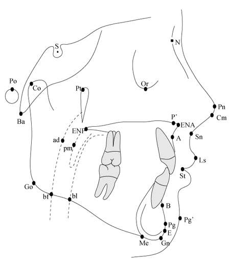
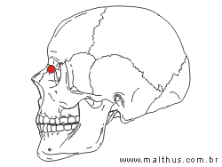
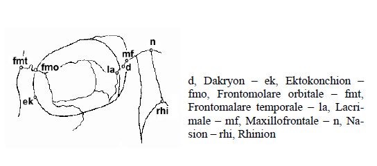
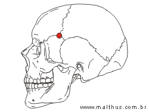
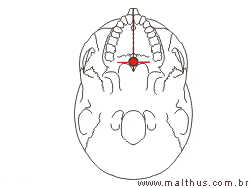
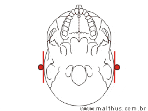
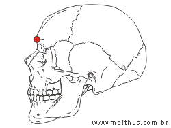
Ponto na borda da mandíbula, é o mais pra frente e mais pra baixo.
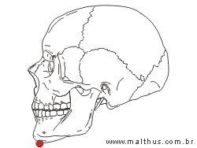
No lado externo do vértice do ângulo da mandíbula.
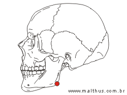
Na sutura esquindelese, do vômer com o esfenoide.
Representado por (ho) na imagem.
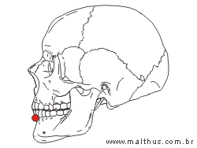
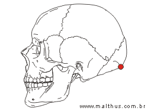
Ponto de encontro dos ossos temporal, parietal e esfenóide.
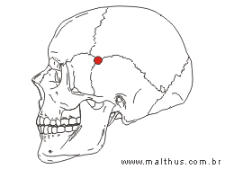
Na sutura sagital com a sutura lambdoide.
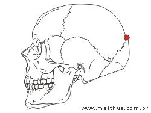
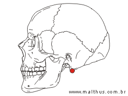
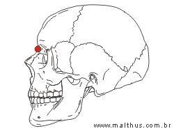
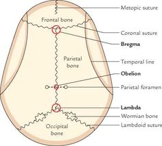
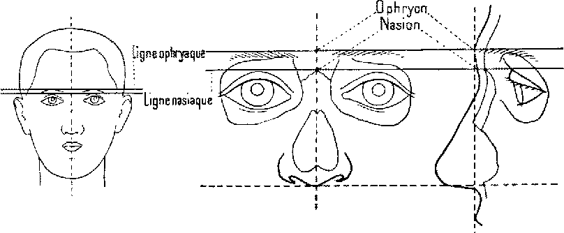
Borda posterior do forame magno.
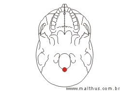
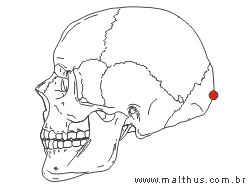
Parte mais posterior da crista óssea dos incisivos centrais superiores.
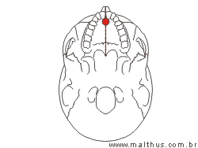
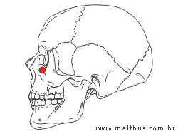
Ponto mais alto na protuberância mentoniana na sínfise.
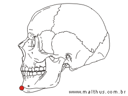
Na borda superior do meato acústico externo.
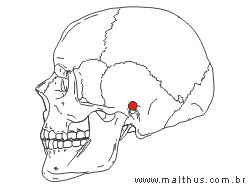
Ponto mais anterior no rebordo alveolar entre os centrais superiores.
Zona onde se encontram: frontal, temporal, parietal e esfenoide.
Ponto mais anterior da sutura internasal.
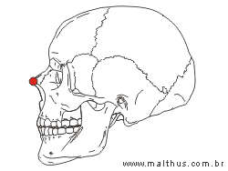
Ponto dentro da sela túrcica, bem no meio.
Representado por (s) na imagem.
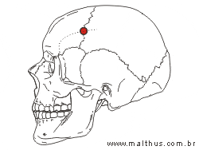
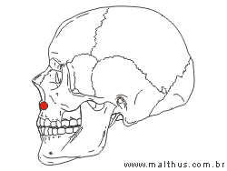
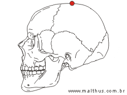
Na parte mais saliente da face lateral do osso zigomático.
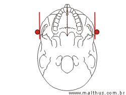
{kind=link}
{kind=link}
{kind=link}